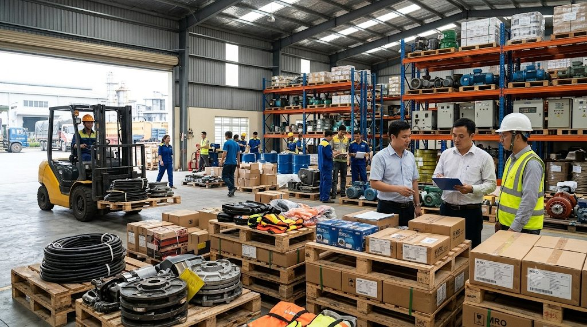
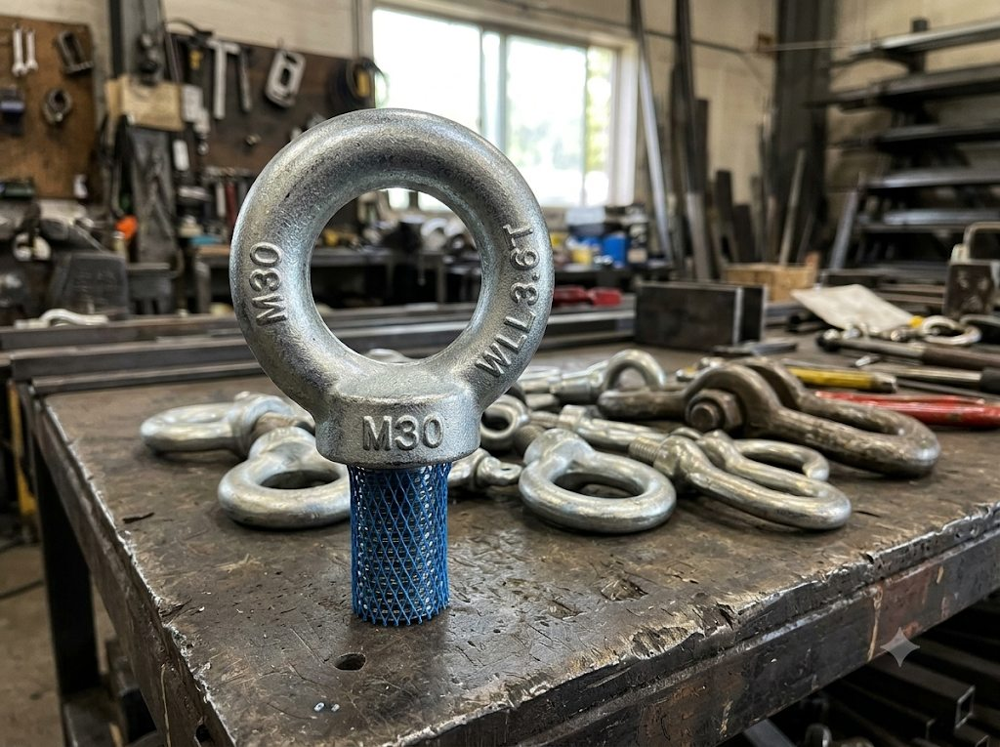
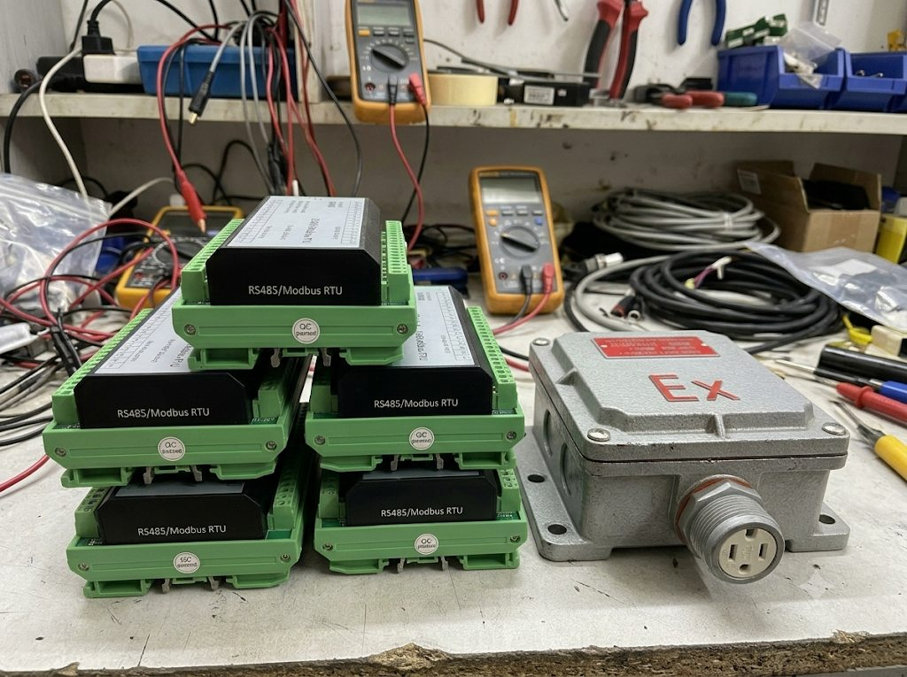
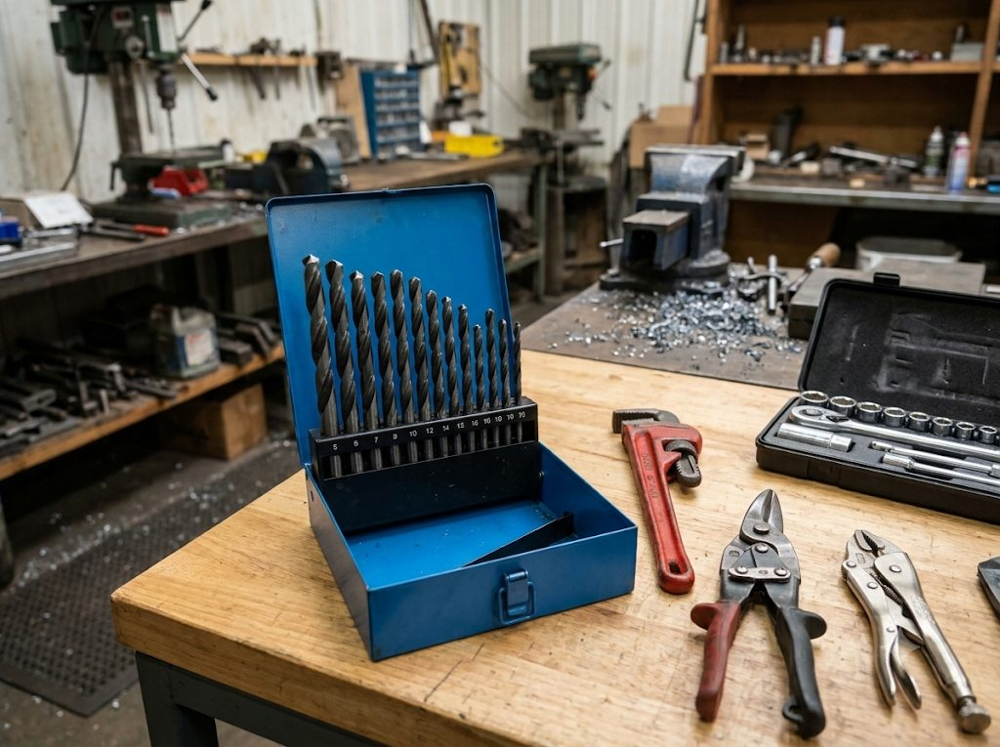
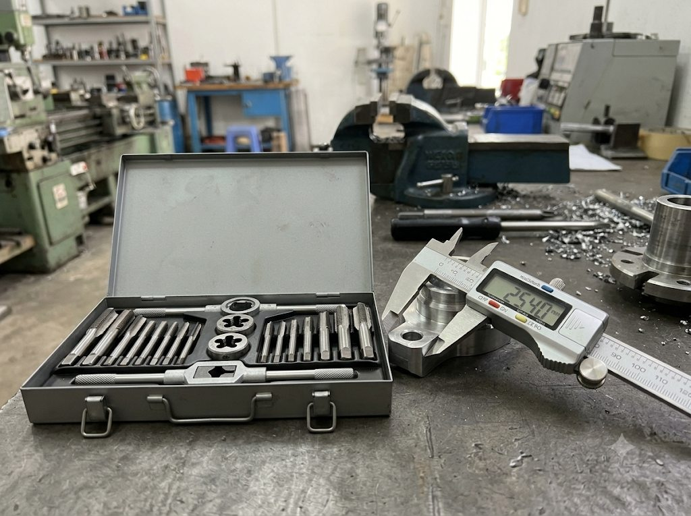
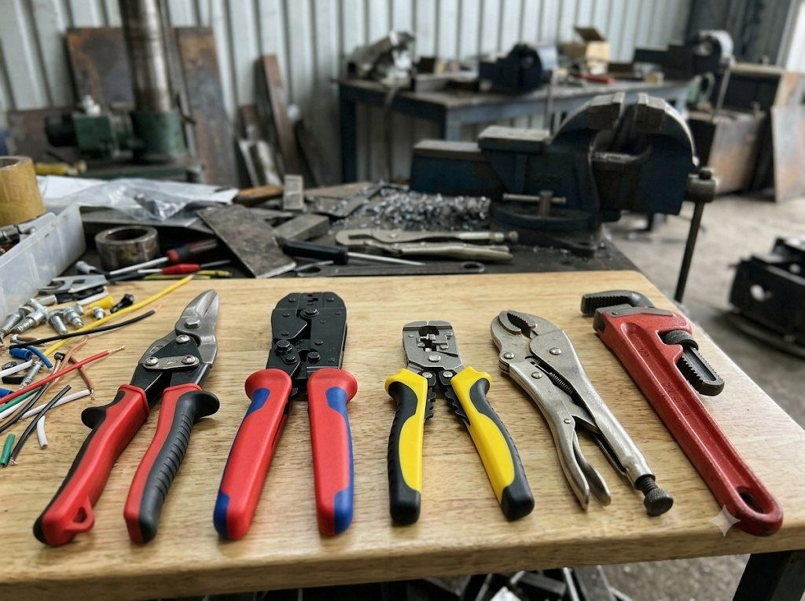

BẮC NINH — Trong bối cảnh làn sóng đầu tư FDI đổ mạnh vào Việt Nam và các khu công nghiệp (KCN) liên tục gia tăng công suất vận hành, việc duy trì một chuỗi cung ứng vật tư vận hành, bảo trì và sửa chữa (MRO) ổn định đang trở thành bài toán sinh tử đối với hàng nghìn nhà máy. Chỉ cần một linh kiện hỏng hóc nhỏ không có sẵn để thay thế, toàn bộ dây chuyền sản xuất có thể bị ngưng trệ, gây tổn thất kinh tế hàng trăm triệu đồng mỗi giờ.
Đứng trước thách thức đó, việc tìm kiếm một đối tác cung ứng vật tư kỹ thuật công nghiệp uy tín, sở hữu nguồn hàng nhập khẩu trực tiếp và kho bãi sẵn có tại các thủ phủ công nghiệp trở thành ưu tiên chiến lược của các quản lý nhà máy, xưởng cơ khí và nhà thầu xây dựng.

Khi điểm nghẽn vật tư ảnh hưởng đến tiến độ dây chuyền
Trong quá trình vận hành nhà máy, sự cố không chỉ xuất phát từ những thiết bị lớn mà đôi khi bắt nguồn từ các linh kiện, phụ kiện hoặc dụng cụ sản xuất có giá trị không cao. Một bo mạch gặp lỗi, chi tiết liên kết không bảo đảm chất lượng hay dụng cụ gia công bị mài mòn đều có thể khiến dây chuyền gián đoạn, ảnh hưởng đến tiến độ sản xuất.
Ở hệ thống điện và tự động hóa, bo mạch truyền thông, hộp nối điện và linh kiện điều khiển giữ vai trò quan trọng trong quá trình vận hành. Trong khi đó, bu lông, móc cẩu cần đáp ứng yêu cầu về tải trọng, độ bền; mũi khoan, lưỡi taro và dụng cụ cắt kim loại phải được kiểm tra, thay thế định kỳ để bảo đảm độ chính xác gia công. Vì vậy, chủ động nguồn cung vật tư phù hợp, đáp ứng yêu cầu kỹ thuật và tiến độ là yếu tố cần thiết giúp doanh nghiệp duy trì hoạt động sản xuất ổn định.
Là đơn vị chuyên nhập khẩu và phân phối trực tiếp vật tư kỹ thuật, Công ty TNHH Thương mại Hóa Đông (trụ sở tại Gia Bình, Bắc Ninh) hướng đến mô hình cung ứng vật tư đa dạng, phục vụ nhu cầu của các nhà máy, xưởng chế tạo cơ khí và nhà thầu xây dựng trên toàn quốc. Hoạt động của doanh nghiệp tập trung vào ba yếu tố: Chất lượng tiêu chuẩn – Giá thành trực tiếp – Giao hàng đúng tiến độ, đáp ứng nhu cầu cung ứng trong sản xuất và bảo trì công nghiệp.
Danh mục sản phẩm chủ lực do Hóa Đông cung ứng được phân chia theo từng mảng kỹ thuật chuyên sâu, gồm máy móc, thiết bị điện, thiết bị khí nén, dụng cụ cơ khí, thiết bị đo lường và trang thiết bị bảo hộ lao động. Các nhóm sản phẩm phục vụ nhiều công đoạn khác nhau, từ gia công, lắp ráp đến kiểm tra, vận hành và bảo trì máy móc, giúp khách hàng thuận tiện hơn trong quá trình tìm kiếm và lựa chọn vật tư phù hợp.
1. Bu lông móc cẩu M30 & Vật tư nâng hạ chịu lực
- Thông số kỹ thuật: Sản xuất bằng công nghệ đúc rèn nguyên khối (Drop Forged Steel), đạt tiêu chuẩn quốc tế DIN 580 và chứng nhận an toàn CE.
- Tải trọng & Ứng dụng: Chịu tải trọng kéo đứng từ 1.2 đến hơn 3.6 tấn (WLL 3.6T), giúp việc di chuyển và nâng hạ khuôn đúc, động cơ cũng như máy móc hạng nặng trong nhà xưởng diễn ra an toàn tuyệt đối.

2. Thiết bị điện, tự động hóa và thiết bị chống cháy nổ
- Bo mạch truyền thông Modbus RS485 & Module I/O: Cung cấp bộ thu thập dữ liệu và mở rộng tín hiệu chuẩn Modbus RTU, hỗ trợ kết nối giữa hệ thống điều khiển trung tâm (PLC, máy tính công nghiệp) với các cảm biến ở khoảng cách xa hàng nghìn mét.
- Thiết bị điện chống cháy nổ (Ex Standard): Bao gồm hộp ổ cắm, phích cắm và hộp nối kim loại đúc đạt chuẩn Ex, chuyên dụng cho các môi trường có nguy cơ cháy nổ cao như nhà máy hóa chất, kho sơn, trạm nhiên liệu và xưởng mộc có nhiều bụi mịn.

3. Bộ dụng cụ cắt gọt, Mũi khoan HSS & Cơ khí cầm tay
- Bộ mũi khoan thép gió HSS: Đa dạng kích cỡ đóng hộp sắt công nghiệp chuyên dụng, chịu nhiệt tốt, giúp khoan mượt và không sứt mẻ trên sắt, thép, inox, nhôm.

- Taro tạo ren & Thước kẹp điện tử: Bộ taro & bàn ren tôi cứng giúp gia công ren mới hoặc phục hồi ren cháy; thước kẹp điện tử đo độ dày với độ chính xác cao.

- Dụng cụ cầm tay: Kéo cắt tôn hàng không, kìm tuốt dây tự động, kìm bấm cos trợ lực, kìm chết và mỏ lết răng kẹp ống nước gang đúc.

4. Phụ kiện súng hàn & Vật tư tiêu hao xưởng
- Chụp khí súng hàn MIG (15AK / 24KD / 36KD): Sản phẩm thương hiệu BAO HU ZUI làm từ hợp kim mạ chống dính xỉ hàn giúp điều hướng khí bảo vệ CO2/Argon ổn định, nâng cao độ bền cho béc hàn.
- Vật tư tiêu hao: Cọ sơn cán gỗ chuyên dụng (hiệu Cây Dừa), đá cắt, đá mài, mỡ hàn chống dính và các vật tư phụ trợ cho xưởng gia công.
Cam kết giá trị dành cho doanh nghiệp và đại lý
Trả lời phỏng vấn về định hướng phát triển, đại diện Công ty TNHH Thương mại Hóa Đông nhấn mạnh:
“Chúng tôi hiểu rằng đối với các nhà máy sản xuất, thời gian là tiền bạc. Do đó, Hóa Đông luôn duy trì lượng hàng tồn kho lớn tại Bắc Ninh, làm việc trực tiếp với các nhà máy sản xuất gốc để cắt giảm mọi chi phí trung gian. Khách hàng khi hợp tác với Hóa Đông không chỉ nhận được mức giá sỉ cạnh tranh nhất mà còn hoàn toàn yên tâm về chất lượng đạt chuẩn QC Passed.”
Với quy trình làm việc chuyên nghiệp, đội ngũ am hiểu kỹ thuật cùng chính sách giao hàng tận nơi trên toàn quốc, Công ty TNHH Thương mại Hóa Đông đang từng bước khẳng định vị thế là điểm tựa vật tư vững chắc, giúp các doanh nghiệp tối ưu hóa chi phí vận hành và vững vàng phát triển sản xuất.
THÔNG TIN LIÊN HỆ CUNG ỨNG VẬT TƯ
CÔNG TY TNHH THƯƠNG MẠI HÓA ĐÔNG
Địa chỉ: Thôn Hương Vinh, Xã Gia Bình, Huyện Gia Bình, Tỉnh Bắc Ninh, Việt Nam
Hotline / Zalo tư vấn & Báo giá: 0904.936.413 / 0241.389.666
Chuyên: Nhập khẩu & Phân phối sỉ vật tư kim khí, thiết bị điện - tự động hóa, phụ kiện nâng hạ, dụng cụ cắt gọt và vật tư MRO cho nhà máy, công trình toàn quốc.